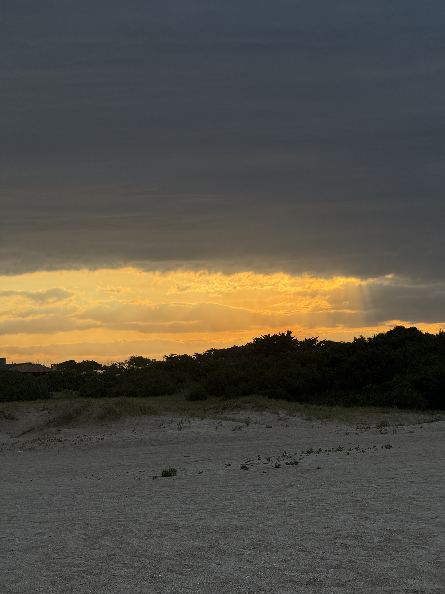
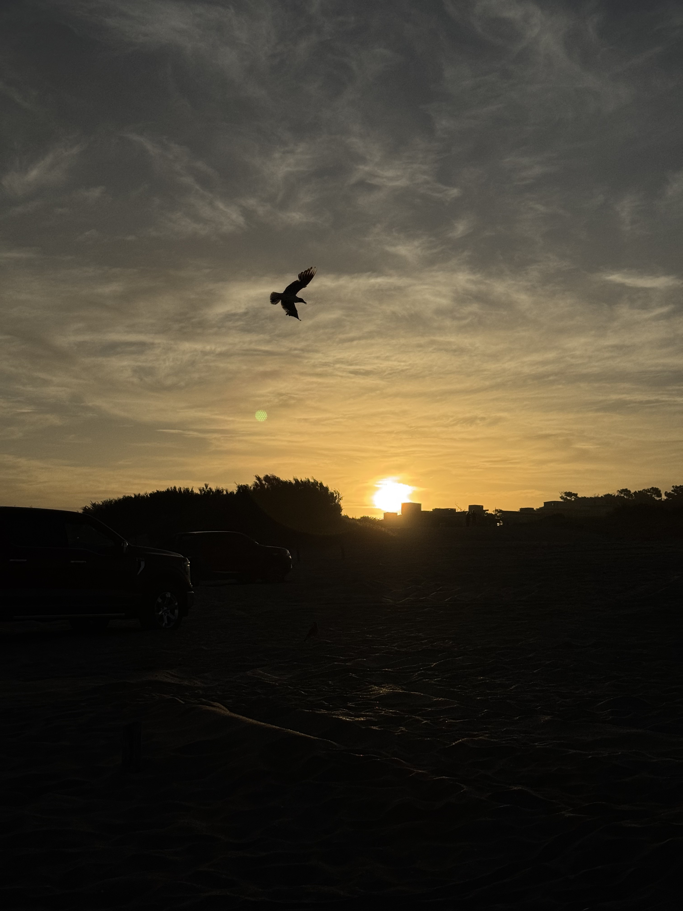

Costa Argentina

Desde el dron se veía toda la playa y las dunas de la costa.

Vi este atardecer mientras caminaba por las dunas de Villa Gesell.

Justo pude sacar la foto cuando el ave pasó frente al atardecer.